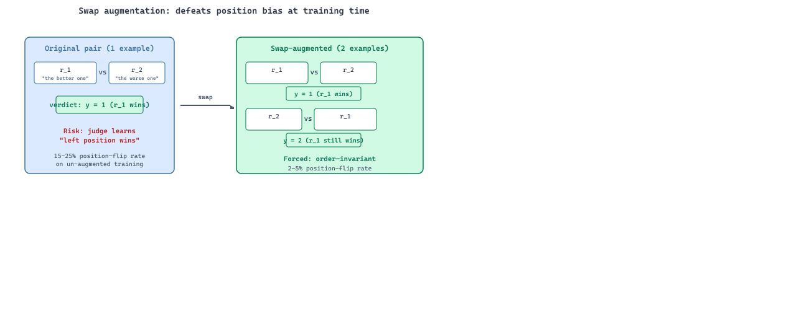
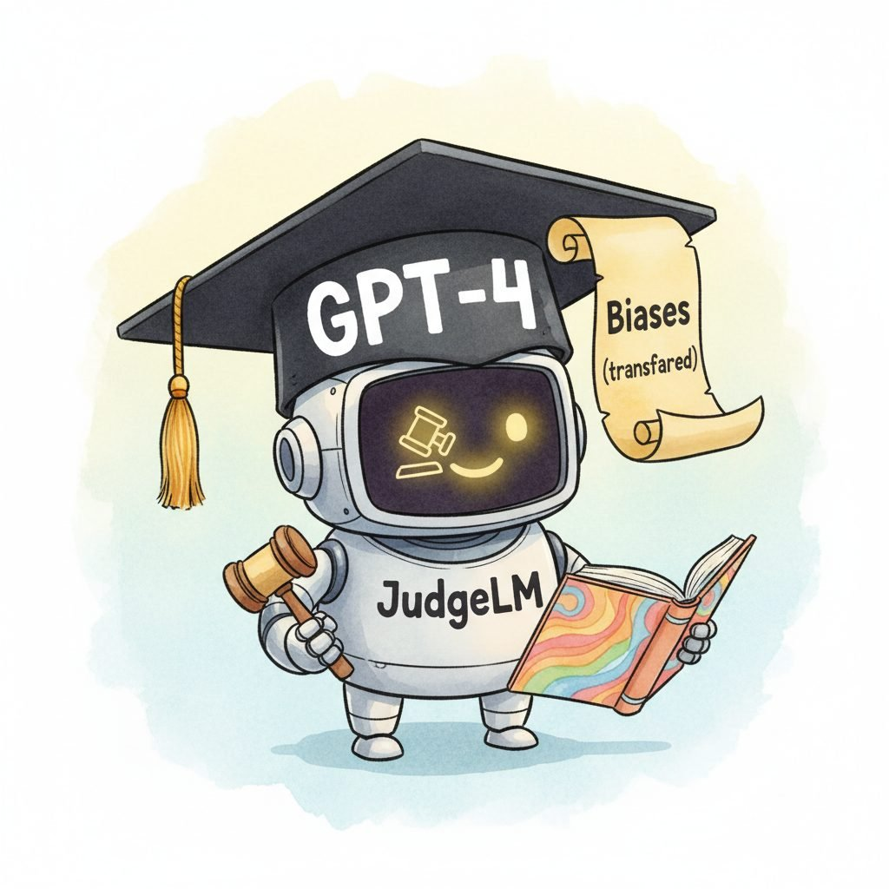

"Distill a frontier judge into a 7B and you keep the verdicts; you also keep the verbosity bias. Students inherit their teacher's quirks, often louder."
Distill, Teacher-Student-Skeptical AI Agent
Sections 46.1-46.3 used frontier models (GPT-4, Claude) as judges out of the box. That works, but it is expensive (API calls every CI run), introduces a vendor dependency, and the judge inherits whatever the vendor's RLHF training instilled (verbosity preference, formatting preference, sycophancy). Training a dedicated judge model attacks all three problems at once. A 7B-13B open-weights model fine-tuned on evaluation data runs on a single GPU at $\sim$10-100$\times$ the throughput of API calls, ships under a permissive license, and can be intentionally shaped during fine-tuning (swap augmentation for position bias, multi-dimensional labels for verbosity, reference-grounded prompts for factuality). This section walks through JudgeLM, the canonical recipe: collect or distill a few hundred thousand GPT-4-judged comparisons, apply targeted augmentations, fine-tune a Llama-class base, and you have a production-grade judge for the cost of one training run.
JudgeLM (Zhu et al., 2023) takes a different approach to building judge models. Rather than training on rubric-based evaluation data, JudgeLM is fine-tuned on large-scale pairwise comparison data generated by GPT-4. The training data consists of question-response pairs where GPT-4 has provided a preference judgment with detailed justification. By distilling GPT-4's evaluation capabilities into a smaller model, JudgeLM achieves judge performance comparable to GPT-4 at substantially lower inference cost.
The JudgeLM training pipeline introduces several techniques to improve judge quality. Swap augmentation doubles the training data by including each comparison in both orders, which directly targets position bias. Reference-guided judging provides the ground-truth answer as additional context, improving accuracy on factual evaluation tasks. Multi-dimensional scoring evaluates responses on multiple criteria simultaneously rather than producing a single holistic score. These techniques are transferable: you can apply swap augmentation and reference-guided judging to any LLM judge, even without fine-tuning.

Position bias (Section 46.1) is the most pernicious LLM-judge bias because it is silent: the judge confidently picks A or B without flagging that the order influenced the choice. Swap augmentation attacks it at the training-data level rather than at inference time. For each labeled pair $(q, r_1, r_2, y)$ with verdict $y \in \{1, 2\}$, the augmented dataset includes both $(q, r_1, r_2, y)$ and $(q, r_2, r_1, \bar{y})$ where $\bar{y}$ swaps the index. The judge sees every example in both orders during training, so the learned policy is forced to be order-invariant: position bias would require the judge to disagree with its own training labels half the time, which the loss directly penalizes. The technique generalizes beyond JudgeLM: any pairwise judge trained with swap-augmented data (Prometheus 2 pairwise, custom in-house judges) exhibits dramatically reduced position-flip rates ($\sim$2-5% vs. the 15-25% typical of un-augmented frontier-model judges). This is the rare debiasing technique that costs nothing at inference and works at the foundation level.
What it is: Use a frontier model (GPT-4, Claude Opus) to label $N \sim 100\text{K}$ pairwise comparisons or rubric scores drawn from your production distribution, then fine-tune a 7B-13B open-weights base (Llama, Mistral, Qwen) on the resulting (input, verdict, justification) triples. The student inherits the teacher's judgment quality at a fraction of the per-judgment cost. Apply swap augmentation, reference-grounded prompts, and multi-dimensional labels during training to address position bias, factuality grounding, and verbosity bias respectively. Validate the distilled judge on a held-out human-rated calibration set (Cohen's $\kappa \geq 0.6$ vs human raters is the deployment threshold; see Production Pattern P9 in Section 46.1).
When not to use it: (1) Eval volumes below $\sim$10K judgments/month, where API costs do not justify the labeling-plus-training pipeline. (2) Evaluation criteria that shift weekly (the distilled judge becomes stale; either retrain on a schedule or stick to API judges). (3) Domains where the teacher itself is unreliable (creative writing, niche technical content) since the student inherits all of the teacher's blind spots and may amplify them through the training objective.
Distilled judges inherit the biases of their teacher. Because JudgeLM (and similar distilled judges) are trained on GPT-4's judgments, they inherit whatever biases GPT-4 exhibits. If GPT-4 has a verbosity preference, the distilled judge will also prefer verbose responses. This creates a risk of bias amplification: the distilled judge may actually exaggerate the teacher's biases because the training process optimizes for agreement with the teacher rather than agreement with humans. Always validate distilled judges against a human evaluation panel on your specific use case before deploying them in production. The meta-evaluation methods in Section 7 below provide a framework for this validation.
Figure 46.4.2 makes the inheritance literal: when a small judge graduates from a frontier teacher, the diploma comes bundled with the teacher's quirks.

The JudgeLM recipe above sounds heavyweight, but a 7B-13B judge fits comfortably on one consumer GPU when you use unsloth. Unsloth (Daniel and Michael Han, 2024+) patches Hugging Face Transformers and TRL with handwritten Triton kernels that deliver roughly 2x faster training and 60-80% less VRAM than the stock SFTTrainer. Pair it with QLoRA and a single RTX 4090 fine-tunes a Llama-3-8B judge on 100K swap-augmented comparisons in an overnight run.
Show code
pip install "unsloth[colab-new]" trl datasets
from unsloth import FastLanguageModel
from trl import SFTTrainer, SFTConfig
model, tokenizer = FastLanguageModel.from_pretrained(
"unsloth/Meta-Llama-3.1-8B-Instruct",
load_in_4bit=True, max_seq_length=4096,
)
model = FastLanguageModel.get_peft_model(model, r=16, lora_alpha=16,
target_modules="all-linear")
SFTTrainer(
model=model, tokenizer=tokenizer,
train_dataset=swap_augmented_judgments, # (prompt, chosen, rejected) format
args=SFTConfig(output_dir="judge-llama-8b", num_train_epochs=2,
per_device_train_batch_size=4, learning_rate=2e-4),
).train()SFTTrainer for DPOTrainer to apply the same swap-augmentation recipe to preference-pair training instead of supervised fine-tuning.46.4.1 JudgeLM: Fine-Tuned Evaluation at Scale
JudgeLM (Zhu et al., 2023) shipped with a 100,000-sample preference-judgment training set that the authors collected by asking GPT-4 to judge pairs of model outputs. The recursive nature (use GPT-4 to train a model to replace GPT-4) was a bit on-the-nose, but it worked: JudgeLM-7B's agreement with human raters on judge-bench-style tasks reached 87%, which is within striking distance of GPT-4's own 91% agreement with humans.
Prerequisites
This section assumes familiarity with debiasing techniques from Section 46.3 and with instruction tuning from Section 13.2. Familiarity with DPO and preference-pair training from Section 20.3 helps when reading the swap-augmentation recipe.
A single trained judge has limits; ensembles and production patterns squeeze the last bit of signal out of fleets of judges. Continue to Section 46.5: Multi-Judge Ensembles and Production Patterns.